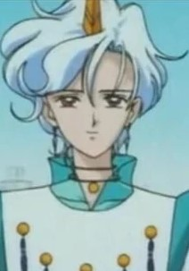
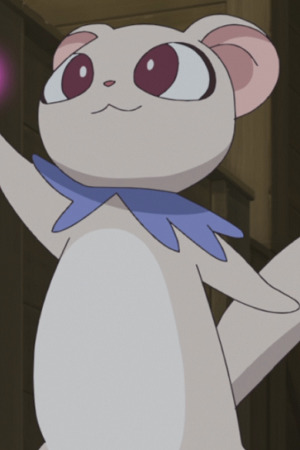

|  |
Helios |
- Sailor Moon Super S
- Sailor Moon Super S Memorial
|
Helios is the priest of Elysion. He is also Pegasus, a white winged unicorn. He is a friend and companion to Chibiusa. He listens and talks to ChibiUsa at night. He lends his power to Sailor Monn and the rest Sailor Scouts. |
|  |
Tart |
- Fresh Pretty Cure!
- Pretty Cure All Stars Movie DX: Minna Tomodachi Kiseki no Zenin Daishuugou
- Fresh Pretty Cure! Movie: The Kingdom of Toys has Lots of Secrets!?
- Pretty Cure All Stars Movie DX2: Kibou no Hikari Rainbow Jewel o Mamore
- Pretty Cure All Stars Movie DX3: Reach the Future! The Rainbow Flower that Connects the World
- Pretty Cure All Stars New Stage: Future Friends
- Pretty Cure All Stars New Stage 2: Friends of the Heart
- Hugtto! Pretty Cure
|
Tart is a ferret-like from the Kingdom of Sweets. He is Chiffon's caretaker, but always has trouble taking care of her. Tart is the prince of the Sweets Kingdom. He is always about the girls and will get emotional over a story. He and Kaoru are good friends. |
 |
Wisdom |
- Pretty Cure
- Pretty Cure Max Heart
|
Wisdom is the guardian of the Prism Stones. He lives in the Garden of Light. |


.jpg)